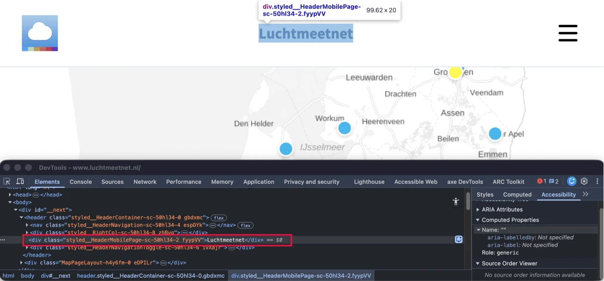
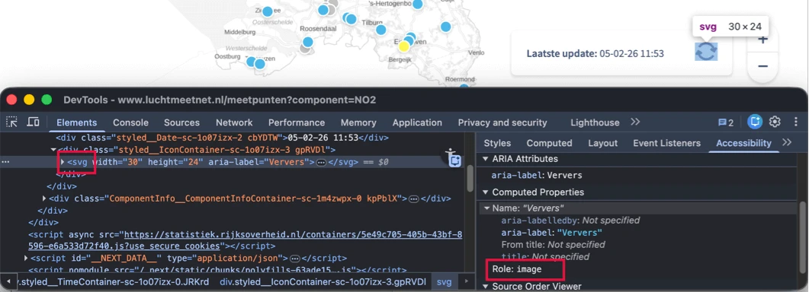
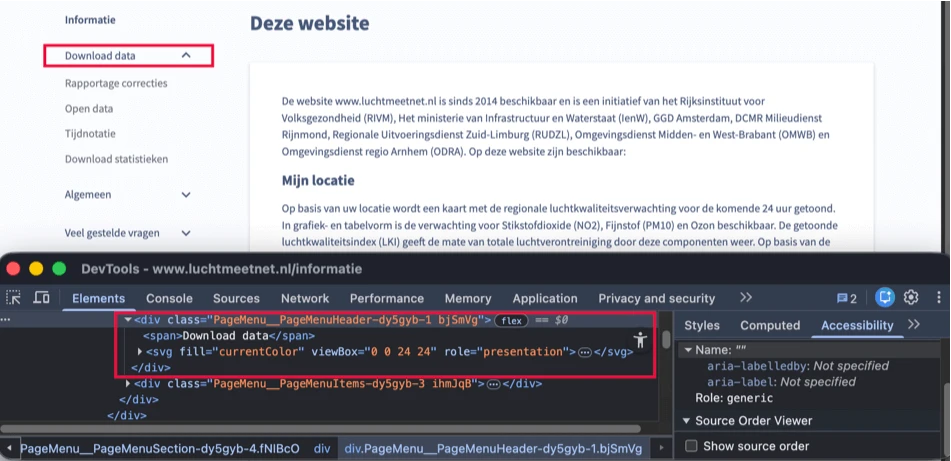
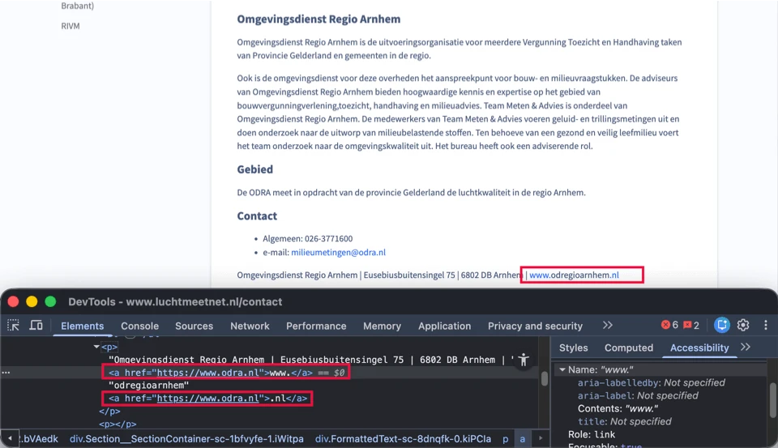
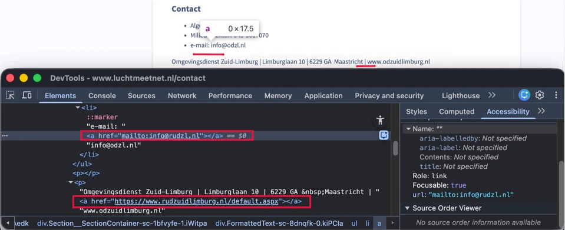

Audit digitale toegankelijkheid van website www.luchtmeetnet.nl
Samenvatting
Wij hebben de website www.luchtmeetnet.nl onderzocht tussen 1 en 16 februari 2026. Op dit moment is een deel van de succescriteria als voldoende beoordeeld. In dit rapport lees je welke punten nog verbetering behoeven en hoe deze kunnen worden aangepakt.
In de header van de website zijn de volgende knoppen niet met het toetsenbord te bedienen: de knop met het deel-icoon met aria-label="Deel", de knop met het vlag-icoon met aria-label="Kies taal" en de knoppen in het taal-submenu, zoals de knop met aria-label="en".
De knoppen zijn niet bereikbaar via het toetsenbord. Daardoor worden de knoppen overgeslagen wanneer bezoekers met het toetsenbord navigeren. Interactieve elementen moeten volledig met het toetsenbord zijn te bedienen.
Oplossing:
Zorg ervoor dat de knoppen met het toetsenbord kunnen worden bediend, bijvoorbeeld met de Enter-, Return- of spatiebalktoets.
#2 - Submenu’s zonder toetsenbordbediening
Impact: GrootType: TechniekWCAG: 2.1.1EN: 9.2.1.1
In de header van de website tonen de links “Meetpunten” en “Data” submenu’s bij hover. Deze submenu’s verschijnen niet bij bediening met het toetsenbord.
Oplossing:
Zorg ervoor dat de extra content ook met het toetsenbord kan worden geopend.
Wanneer met de muis over de links “Meetpunten” en “Data” in het hoofdmenu wordt bewogen, verschijnt extra content die over de bestaande paginacontent valt.
Oplossing:
Zorg ervoor dat deze extra content kan worden gesloten zonder gebruik van de muis en zonder dat de toetsenbordfocus hoeft te worden verplaatst. Ondersteun bijvoorbeeld het sluiten met de Escape-toets.
#4 - ‘aria-expanded’ ontbreekt bij submenu
Impact: GrootType: TechniekWCAG: 4.1.2EN: 9.4.1.2
In de header van de website hebben de links “Meetpunten” en “Data” submenu’s. Wanneer een gebruiker van een schermlezer het menu opent, wordt niet doorgegeven of het submenu open of gesloten is.
Wanneer een submenu aanwezig is, moet het element dat het submenu opent aangeven of het submenu zichtbaar of verborgen is.
Oplossing:
Gebruik het ‘aria-expanded’-attribuut op de knop of link die het submenu opent.
In de header van de website hebben de links “Meetpunten” en “Data” submenu’s. In deze submenu’s worden links visueel als groep gepresenteerd, maar deze groepering is niet vastgelegd in de HTML-structuur.
Wanneer voor ziende bezoekers duidelijk is dat links bij elkaar horen, moet deze structuur ook in de HTML-code aanwezig zijn.
In het hoofdmenu heeft de actieve link een afwijkende visuele weergave. Dit onderscheid is niet vastgelegd in de code. Daardoor is voor gebruikers van een schermlezer niet duidelijk welke pagina actief is.
Oplossing:
Zorg ervoor dat in de code wordt vastgelegd welke pagina actief is. Voeg bijvoorbeeld aria-current="true" toe aan de actieve link. Andere opties zijn een h1-kop met dezelfde tekst als het menu-item of het gebruik van de paginatitel (title).
#7 - Onlogische focusvolgorde
Impact: GrootType: TechniekWCAG: 2.4.3EN: 9.2.4.3
In de header wordt bij het activeren van de links in het hoofdmenu de bijbehorende content getoond. De toetsenbordfocus verplaatst zich daarna niet naar deze nieuw geopende content, maar naar het volgende interactieve element in de header. Daardoor ontstaat een onlogische focusvolgorde.
Oplossing:
Zorg ervoor dat de toetsenbordfocus bij het openen van content naar de nieuw getoonde content wordt verplaatst en dat de focusvolgorde aansluit op de visuele volgorde van de pagina.
Op deze website verandert de inhoud van pagina’s dynamisch, maar de tekst in het <title>-element verandert niet mee. Daardoor komt de paginatitel niet overeen met de actuele inhoud van de pagina. Daarnaast is de titel "Luchtmeetnet.nl" geen goede beschrijving van de inhoud van de pagina.
Gebruikers van een schermlezer gebruiken de paginatitel vaak om te begrijpen waar de pagina over gaat. Wanneer de titel niet overeenkomt met de actuele inhoud van de pagina, kan dit verwarrend zijn.
Zorg ervoor dat de tekst in het <title>-element automatisch wordt bijgewerkt wanneer de inhoud van de pagina dynamisch wijzigt.
Zorg er daarnaast voor dat het <title>-element van elke pagina uniek is en de inhoud van de betreffende pagina nauwkeurig beschrijft, bij voorkeur aangevuld met de naam van de organisatie.
#9 - Kop niet gemarkeerd in code
Impact: MediumType: ContentWCAG: 1.3.1EN: 9.1.3.1

Wanneer de pagina’s van deze website op een klein scherm worden bekeken, zijn er teksten die niet als kop zijn gemarkeerd waaronder:
Voor bezoekers die hulpsoftware gebruiken, is tekst die visueel als kop is vormgegeven maar niet als kop is gemarkeerd in de code niet bruikbaar. Zij navigeren via koppen om de inhoud te scannen of snel naar een specifieke sectie te gaan. Dit is alleen mogelijk wanneer koppen ook in de code als kop zijn vastgelegd.
Wanneer koppen uitsluitend visueel zijn vormgegeven, bijvoorbeeld door vetgedrukte tekst, wijkt de informatiestructuur in de code af van de visuele structuur van de pagina.
Bovenaan de website staat, wanneer deze op een klein scherm wordt bekeken, een aanklikbaar icoon met drie horizontale lijnen. Dit element werkt als een knop, maar heeft niet de juiste toegankelijke rol. Het icoon heeft ook geen tekstalternatief.
Wanneer een knop alleen uit een afbeelding bestaat, moet het tekstalternatief van de afbeelding de functie van de knop beschrijven. Dit probleem komt ook voor bij de afbeeldingen van vlaggen in dit menu, die werken als knoppen om de taal van de pagina te wijzigen.
Oplossing:
Zorg ervoor dat de knop de juiste toegankelijke rol heeft. Gebruik hiervoor het <button>-element. Voeg een tekstalternatief toe dat de functie van de knop beschrijft. Dit kan door een tekstalternatief bij het icoon te gebruiken of door een aria-label toe te voegen aan de knop.
Wanneer het icoon wordt geactiveerd, verandert het in een kruis en wijzigt de functie van de knop naar het sluiten van het menu. Zorg ervoor dat het tekstalternatief mee wijzigt met deze functie.
#11 - Status menuknop ontbreekt
Impact: GrootType: TechniekWCAG: 4.1.2EN: 9.4.1.2
Op een klein scherm staat een menuknop met drie horizontale lijnen om het mobiele navigatiemenu te openen. De knop geeft geen informatie over de toestand van het menu (open of gesloten) aan bezoekers die dit niet kunnen zien, zoals gebruikers van een schermlezer.
Oplossing:
Zorg ervoor dat de status van het menu ook in de code beschikbaar is. Gebruik hiervoor bijvoorbeeld het aria-expanded-attribuut op de menuknop. Zet dit attribuut "true" wanneer het menu is geopend en op “false" wanneer het menu is gesloten.
#12 - Menuknop zonder toetsenbordbediening
Impact: GrootType: TechniekWCAG: 2.1.1EN: 9.2.1.1
Op een klein scherm staat een menuknop met drie horizontale lijnen om het mobiele navigatiemenu te openen. Deze knop is niet met het toetsenbord te bedienen.
De knop is niet bereikbaar via het toetsenbord. Daardoor wordt de knop overgeslagen wanneer bezoekers met het toetsenbord navigeren. Interactieve elementen moeten volledig met het toetsenbord te bedienen zijn.
Dit probleem staat ook in dit menu bij de knoppen die worden gebruikt om de taal van de pagina’s te wijzigen.
Oplossing:
Zorg ervoor dat een knop met het toetsenbord kan worden bediend, bijvoorbeeld met de Enter-, Return- of spatiebalktoets.
Op een klein scherm staat een menuknop met drie horizontale lijnen om het mobiele navigatiemenu te openen. Wanneer het menu opent, verplaatst de toetsenbordfocus zich niet naar het mobiele menu.
Daarnaast kunnen interactieve elementen op de onderliggende pagina nog steeds toetsenbordfocus krijgen terwijl het menu is geopend. Deze elementen zijn op dat moment niet zichtbaar, omdat het menu eroverheen ligt.
Oplossing:
Zorg ervoor dat de toetsenbordfocus bij het openen van het menu naar het mobiele menu wordt verplaatst. Zolang het menu is geopend, moet de focus in het menu blijven en niet op de onderliggende pagina terechtkomen.
Op deze pagina krijgt het element met role="application" en aria-label="Kaart" toetsenbordfocus. Er is geen zichtbare focusindicator aanwezig wanneer dit element focus heeft.
Oplossing:
Zorg ervoor dat de toetsenbordfocus zichtbaar is op focusbare elementen, zodat bezoekers weten wanneer zij een knop kunnen indrukken.
Op deze pagina mist in de onderdelen met verborgen content “Legenda” en “Selecteer component” het element dat de verborgen content opent en sluit de rol van knop.
De teksten waarmee deze accordeononderdelen worden geopend en gesloten functioneren als knoppen, maar zijn niet als zodanig gemarkeerd. Daarnaast dienen deze teksten als kop voor de bijbehorende content, maar zijn zij niet als kop vastgelegd in de code.
Op deze pagina is de open of gesloten toestand van de accordeons “Legenda” en “Selecteer component” visueel zichtbaar, maar deze is niet in de code vastgelegd. Het pijlicoon dat aangeeft dat er verborgen content aanwezig is, heeft geen tekstalternatief.
Daardoor is voor gebruikers van een schermlezer niet duidelijk of een sectie is geopend of gesloten.
Pas aria-expanded-attribuut toe op de knoppen waarmee de secties worden geopend en gesloten, of voeg visueel verborgen tekst toe die de staat van de sectie beschrijft.
#17 - Accordeon zonder toetsenbordbediening
Impact: GrootType: TechniekWCAG: 2.1.1EN: 9.2.1.1
Op deze pagina zijn de accordeononderdelen “Legenda” en “Selecteer component” niet met het toetsenbord te bedienen.
Bezoekers die alleen met het toetsenbord navigeren, moeten alle klikbare onderdelen van de website gewoon kunnen gebruiken. Daaronder vallen: links, knoppen, formulieren, keuzelijsten, tabbladen, sliders en accordeons.
Op deze pagina staat in het onderdeel met verborgen content dat wordt geopend met “Selecteer component” een keuzelijst (<select>-element) met het label “Selecteer component”. De toegankelijke naam van dit element ontbreekt.
Daardoor is de keuzelijst niet toegankelijk voor gebruikers van een schermlezer. Ook bezoekers die spraaksoftware gebruiken kunnen het element niet bedienen, omdat de zichtbare tekst niet voorkomt in de toegankelijke naam.
Dit probleem komt ook voor op de pagina’s:
https://www.luchtmeetnet.nl/meetpunten - in het onderdeel dat wordt geopend met “Selecteer component” een keuzelijst met het label “Selecteer component”.
https://www.luchtmeetnet.nl/meetpunten - staan <select>-elementen met de labels “Selecteer waarde” en “Selecteer periode” in het paneel dat wordt geopend door het activeren van de ronde markeringen op de kaart.
https://www.luchtmeetnet.nl/verwacht - staan de <select>-elementen met de labels “Selecteer provincie”, “Selecteer dag” en “Selecteer tijd” in het verborgen onderdeel dat wordt geopend met “Filter”.
Oplossing:
Geef het <select>-element een toegankelijke naam.
Zorg ervoor dat de toegankelijke naam de zichtbare tekst bevat, bij voorkeur aan het begin. De toegankelijke naam mag ook gelijk zijn aan de zichtbare tekst.
#19 - Alleen kleur gebruikt op kaart
Impact: MediumType: ContentWCAG: 1.4.1EN: 9.1.4.1
Op de kaart wordt informatie alleen met kleur overgebracht. De markeringen op de kaart worden uitsluitend onderscheiden op basis van kleur, zoals de gele en blauwe cirkels.
Wanneer bezoekers de kleuren niet kunnen zien of niet van elkaar kunnen onderscheiden, is niet duidelijk welke kleur bij welke categorie hoort.
Op de kaart staan ronde markeringen in verschillende kleuren, bijvoorbeeld geel en blauw. Deze kleuren hebben een onvoldoende contrastratio ten opzichte van de achtergrond. Zo heeft de gele (#FFF855) markering op de lichtgrijze (#DCDCDC) achtergrond van de kaart een contrastratio van 1,2:1. De blauwe (#4AB7E9) kleur op de witte achtergrond van de kaart heeft een contrastratio van 2,3:1.
Daarnaast komt hetzelfde probleem voor in de legenda. De blauwe (#96C8FF) markering op een witte achtergrond heeft bijvoorbeeld een contrastratio van 1,8:1. Ook de gele en oranje kleuren hebben onvoldoende kleurcontrast.
Zorg ervoor dat het contrast tussen de informatieve elementen op de kaart en in de legenda en de achtergrond minimaal 3,0:1 is. Controleer of alle markeringen op de kaart en in de legenda voldoende contrast hebben ten opzichte van hun achtergrond.
Op de kaart staan grijze (#B4B4B4) teksten, zoals “Noordzee” en “Markermeer”, op een lichtgrijze (#F3F3F3) achtergrond. De contrastratio is 1,9:1 en daarmee te laag.
Een vergelijkbaar probleem komt voor bij teksten zoals “Aalsmeer”, “Amstelveen”, “Nes aan de Amstel” op een grijze of witte achtergrond. Zo heeft de grijze (#969696) tekst op een lichtgrijze (#EBEBEB) achtergrond een contrastratio van 2,5:1.
Oplossing:
Omdat deze tekst kleiner is dan 24px en niet vetgedrukt, moet het contrast minimaal 4,5:1 zijn. Op deze pagina staat een instructie om kleurcontrast te testen: https://properaccess.nl/hoe-test-ik-kleurcontrast/.
#22 - De kleurmarkeringen in de legenda hebben geen tekstalternatief
Op deze pagina bevat de legenda gekleurde vierkante markeringen die de kleuren op de kaart weergeven. Deze kleurmarkeringen worden gebruikt om informatie over te brengen, maar hebben geen tekstalternatief dat de kleuren zelf benoemt. Hierdoor kunnen bezoekers die hulpsoftware gebruiken, zoals schermlezers, de informatie die met de kleuren wordt overgebracht niet waarnemen.
Daarnaast wordt de relatie tussen de kleurmarkeringen en de bijbehorende categorieën alleen visueel weergegeven en is deze niet programmatisch te bepalen. Hierdoor wordt aan bezoekers die hulpsoftware gebruiken niet doorgegeven welke kleur bij welke categorie hoort.
https://www.luchtmeetnet.nl/meetpunten - in de legenda van de grafieken in het paneel dat opent wanneer de ronde markeringen op de kaart worden geactiveerd.
Zorg voor een tekstalternatief voor de kleurmarkeringen, zodat de betekenis beschikbaar is in de code. Bijvoorbeeld via visueel verborgen tekst voor bezoekers die hulpsoftware gebruiken.
Op deze pagina bevat de kaart meerdere ronde markeringen die werken als knoppen. Deze knoppen openen panelen met gedetailleerde informatie over een geselecteerde meetlocatie op de pagina “Meetpunten”. Alle knoppen hebben dezelfde toegankelijke naam: “Marker”. Deze naam beschrijft de functie van de knoppen niet duidelijk.
Daarnaast wordt de locatie-informatie, die zichtbaar is wanneer je met de muis over de knop beweegt, alleen aangeboden via aria-describedby. Deze informatie maakt geen onderdeel uit van de toegankelijke naam.
Daardoor kunnen bezoekers die hulpsoftware gebruiken de verschillende knoppen niet goed van elkaar onderscheiden.
Oplossing:
Zorg ervoor dat de toegankelijke naam aansluit bij de actie van de knop, zodat knoppen met verschillende functies ook verschillende toegankelijke namen hebben.
#24 - Knoppen zonder toetsenbordbediening
Impact: GrootType: TechniekWCAG: 2.1.1EN: 9.2.1.1
Op deze pagina zijn de ronde markeringen op de kaart die als knoppen functioneren niet met het toetsenbord te bedienen.
Daardoor kunnen bezoekers die met het toetsenbord navigeren de knoppen niet activeren.
Oplossing:
Zorg ervoor dat de knoppen met het toetsenbord kunnen worden bediend, bijvoorbeeld met de Enter-, Return- of spatiebalktoets.
#25 - Onjuiste rol bij knop
Impact: GrootType: TechniekWCAG: 4.1.2EN: 9.4.1.2

Op deze pagina heeft de knop met pijlen naast de tekst “Laatste update” niet de juiste toegankelijke rol.
Daardoor kunnen hulptechnologieën niet correct bepalen dat dit element als knop functioneert.
Oplossing:
Zorg ervoor dat de knop de juiste toegankelijke rol heeft. Gebruik het button-element.
#26 - Toetsenbordbediening ontbreekt
Impact: GrootType: TechniekWCAG: 2.1.1EN: 9.2.1.1
Op deze pagina is de knop met pijltjes naast de tekst 'Laatste update' niet toegankelijk via het toetsenbord.
Oplossing:
Zorg ervoor dat de knop kan worden bediend met zowel de spatiebalk als de Enter-toets.
#27 - Statusmelding niet automatisch voorgelezen
Impact: GrootType: TechniekWCAG: 4.1.3EN: 9.4.1.3
Op deze pagina toont de kaart meetgegevens die kunnen worden vernieuwd met de knop met pijlen naast de tekst “Laatste update”. Wanneer deze knop wordt geactiveerd, worden de kaartgegevens bijgewerkt en verandert de tekst met de datum en tijd van de laatste update (bijvoorbeeld “Laatste update: 05-02-26 13:56”). Dit is een statusmelding.
Deze wijziging wordt niet automatisch aangekondigd door schermlezers. Daardoor worden gebruikers van een schermlezer niet geïnformeerd dat de gegevens zijn bijgewerkt of wanneer de update heeft plaatsgevonden.
Oplossing:
Zorg ervoor dat dit type melding automatisch wordt voorgelezen als statusbericht, zonder dat de gebruiker ernaartoe hoeft te navigeren. Dit kan door role="status" toe te voegen aan het element van de melding. Meer informatie hierover is te vinden op: https://www.w3.org/WAI/WCAG21/Techniques/aria/ARIA19.
#28 - Functionaliteiten niet bruikbaar bij inzoomen
Wanneer deze pagina wordt ingezoomd tot 200%, is de informatie “Laatste update:” niet zichtbaar. Ook de knop met pijlen om de kaartgegevens te vernieuwen en de knoppen om in en uit te zoomen zijn dan niet zichtbaar en niet bedienbaar.
Dit probleem treedt ook op wanneer de pagina word bekeken met een schermresolutie van 1280 bij 1024 pixels en is ingezoomd tot 400%.
Zorg ervoor dat alle informatie en functies beschikbaar en bedienbaar blijven wanneer wordt ingezoomd tot 200% en 400% op een scherm van 1280 bij 1024 pixels.
Op deze pagina staan, wanneer deze op een klein scherm wordt bekeken, aanklikbare iconen die de submenu’s voor de legenda en filters openen. Deze iconen hebben niet de juiste toegankelijke rol en geen tekstalternatief.
Daardoor is voor bezoekers die hulpsoftware gebruiken niet duidelijk wat de functie van deze knoppen is.
Dezelfde problemen komen voor op de volgende pagina’s:
Zie ook hetzelfde probleem bij het “X”-icoon in het submenu “Legenda”.
Oplossing:
Zorg ervoor dat de knop de juiste toegankelijke rol heeft. Gebruik hiervoor het <button>-element.
Voeg een tekstalternatief toe dat de functie van de knop beschrijft, bijvoorbeeld via een tekstalternatief bij het icoon of een aria-label op de knop.
#30 - Status menuknop ontbreekt
Impact: GrootType: TechniekWCAG: 4.1.2EN: 9.4.1.2
Op deze pagina staan, wanneer deze op een klein scherm wordt bekeken, knoppen die de submenu’s voor de legenda en filters openen. Deze knoppen geven geen informatie over de toestand van het submenu (open of gesloten).
Dezelfde problemen komen voor op de volgende pagina’s:
Zorg ervoor dat de status van het menu ook in de code beschikbaar is. Gebruik hiervoor bijvoorbeeld het aria-expanded-attribuut op de menuknop. Zet dit attribuut "true" wanneer het menu is geopend en op “false" wanneer het menu is gesloten.
#31 - Submenuknoppen zonder toetsenbordbediening
Impact: GrootType: TechniekWCAG: 2.1.1EN: 9.2.1.1
Op deze pagina zijn, wanneer deze op een klein scherm wordt bekeken, de knoppen die de submenu’s voor de legenda en filters openen niet met het toetsenbord te bedienen.
Daardoor kunnen bezoekers die met het toetsenbord navigeren deze knoppen niet activeren.
Deze problemen komen voor op de volgende pagina’s:
Wanneer deze pagina wordt bekeken met een schermresolutie van 1280 bij 1024 pixels en is ingezoomd tot 400% (320px breedte), verdwijnt een deel van de content in het submenu van de legenda.
Op deze pagina openen meerdere ronde markeringen op de kaart panelen met gedetailleerde informatie over een geselecteerde meetlocatie op de pagina “Meetpunten”. De toetsenbordfocus verplaatst zich niet naar het nieuw geopende paneel, maar gaat verder naar de knoppen op de kaart die daarachter liggen. Daardoor komt de toetsenbordfocus terecht op interactieve elementen die niet zichtbaar zijn, omdat zij achter het geopende paneel liggen. De focusvolgorde sluit hierdoor niet aan op de visuele structuur van de pagina.
Het paneel met gedetailleerde informatie bedekt een deel van de pagina content. Interactieve elementen op de onderliggende pagina kunnen nog steeds toetsenbordfocus krijgen, terwijl de focusindicator niet zichtbaar is.
Oplossing:
Verplaats bij het activeren van de knop de toetsenbordfocus naar het volgende logische element.
Houd de toetsenbordfocus binnen het paneel totdat het wordt gesloten via de sluitknop of met de ESC-toets. Onderliggende interactieve elementen mogen geen toetsenbordfocus krijgen zolang het paneel is geopend.
#34 - Onjuiste rol bij interactieve elementen
Impact: GrootType: TechniekWCAG: 4.1.2EN: 9.4.1.2
Op deze pagina opent bij het activeren van de ronde markeringen op de kaart een paneel met gedetailleerde informatie. In dit paneel staan interactieve elementen die niet de juiste toegankelijke rol hebben. Het gaat om het element met het “X”-icoon, het element met het deel-icoon en de elementen met de teksten “Meer informatie” en “Bekijk alle metingen van deze component”.
Daardoor kunnen hulptechnologieën niet correct bepalen of het om een knop of een link gaat.
Oplossing:
Zorg ervoor dat de interactieve elementen de juiste toegankelijke rol hebben. Gebruik het <button>-element voor knoppen en het <a>-element voor links.
Op deze pagina opent bij het activeren van de ronde markeringen op de kaart een paneel met gedetailleerde informatie. Dit paneel bevat een “X”-icoon om het te sluiten. Dit icoon heeft geen tekstalternatief waardoor het interactieve element geen toegankelijke naam heeft.
Daardoor is voor bezoekers die hulpsoftware gebruiken niet duidelijk wat de functie van deze knop is.
Oplossing:
Voeg een tekstalternatief aan het icoon of gebruik een ‘aria-label’ op het interactief element om de functie te beschrijven.
#36 - Interactieve elementen zonder toetsenbordbediening
Impact: GrootType: TechniekWCAG: 2.1.1EN: 9.2.1.1
Op deze pagina opent bij het activeren van de ronde markeringen op de kaart een paneel met gedetailleerde informatie. Dit paneel bevat meerdere interactieve elementen die niet met het toetsenbord zijn te bedienen. Het gaat om het element met het “X”-icoon, het element met de tekst “Meer informatie”,het element met het deel-icoon en het element met de tekst “Bekijk alle metingen van deze component”.
Daardoor kunnen bezoekers die met het toetsenbord navigeren deze elementen niet activeren.
Oplossing:
Zorg ervoor dat interactieve elementen met het toetsenbord kunnen worden bediend, bijvoorbeeld met de Enter-, Return- of spatiebalktoets.
Op deze pagina opent bij het activeren van de ronde markeringen op de kaart een paneel met gedetailleerde informatie. In dit paneel staat een onderdeel dat eruitziet en werkt als tabs, zoals interactieve elementen waarmee kan worden gewisseld tussen stoffen NO₂, NO en O₃. Wanneer een tab wordt geactiveerd, verschijnt nieuwe content. De vereiste rollen en attributen ontbreken.
Een vergelijkbaar probleem komt voor op de volgende pagina’s:
https://www.luchtmeetnet.nl/mijn-locatie – de interactieve elementen met de teksten “Air quality”, “Nitrogen dioxide”, “Ozone” en andere zijn gemarkeerd als radioknoppen, terwijl het onderdeel eruitziet en werkt als tabs
Op deze pagina staan grafieken in het paneel dat opent wanneer de ronde markeringen op de kaart worden geactiveerd. Deze grafieken zijn complexe afbeeldingen en hebben geen betekenisvol tekstalternatief.
Onder de grafieken staat tekst en een tabel onder “Gemeten concentraties” waarin de gegevens in tekstvorm worden gepresenteerd. De grafieken hebben geen kort tekstalternatief dat aangeeft dat het om grafieken gaat of dat er een meer uitgebreide tekstuele beschrijving beschikbaar is.
Daardoor worden bezoekers die hulpsoftware gebruiken niet geïnformeerd over de aanwezigheid van de grafieken of over waar de bijbehorende tekstuele informatie is te vinden.
Oplossing:
Voeg aan elke grafiek een kort tekstalternatief toe waarin wordt aangegeven dat het om een grafiek gaat en dat de gedetailleerde gegevens beschikbaar zijn in de tekst en tabel onder “Gemeten concentraties”.
#39 - Informatie grafiek alleen via kleur
Impact: MediumType: ContentWCAG: 1.4.1EN: 9.1.4.1
In de grafieken wordt alleen kleur gebruikt om informatie over te brengen, zoals de gele, oranje en blauwe kleuren in de legenda.
Wanneer bezoekers de kleuren niet kunnen zien of niet van elkaar kunnen onderscheiden, is niet duidelijk welke kleur bij welke categorie hoort.
Op deze pagina staat in het paneel dat opent wanneer de ronde markeringen op de kaart worden geactiveerd een alinea met links, zoals “disclaimer”. Deze links zijn alleen te onderscheiden van de omringende tekst door een kleurverschil.
Daardoor is niet voor alle bezoekers duidelijk dat het om links gaat.
Dit probleem komt ook voor op de volgende pagina’s:
Op deze pagina staat in het paneel dat opent wanneer de ronde markeringen op de kaart worden geactiveerd een alinea met links, zoals "disclaimer". De blauwe (#4082FF) linktekst staat op een witte achtergrond. De contrastratio is te laag: 3,6:1.
Dit probleem komt ook voor op de pagina: https://www.luchtmeetnet.nl/componenten. De blauwe linktekst, zoals “disclaimer” en “Meer informatie over ontbrekende metingen.” staat daar op een lichtgrijze (#FAFBFF) achtergrond. De contrastratio is te laag: 3,5:1.
Zie ook andere pagina’s met een vergelijkbaar probleem.
Oplossing:
Omdat deze tekst kleiner is dan 24 pixels en niet vetgedrukt, moet het contrast minimaal 4,5:1 zijn.
Op deze pagina staat in het paneel dat opent wanneer de ronde markeringen op de kaart worden geactiveerd een gegevenstabel. Deze tabel is niet als tabel gemarkeerd in de HTML-structuur.
Daardoor kan een schermlezer de relatie tussen de cellen niet bepalen. De inhoud wordt onjuist of onvolledig voorgelezen.
Dit probleem komt ook voor op de volgende pagina’s:
Op deze pagina staat in het paneel dat opent wanneer de ronde markeringen op de kaart worden geactiveerd een tabel onder “Gemeten concentraties”. In deze tabel staan aanklikbare pijl-iconen zonder tekstalternatief.
Daardoor hebben deze knoppen geen toegankelijke naam en is voor bezoekers die hulpsoftware gebruiken niet duidelijk wat de functie van de knoppen is.
Dit probleem komt ook voor op de volgende pagina’s:
Voeg een tekstalternatief toe dat de functie van de knop beschrijft, bijvoorbeeld een tekstalternatief bij het icoon te gebruiken of door een aria-label toe te voegen aan de knop.
Op deze pagina opent bij het activeren van de ronde markeringen op de kaart, wanneer deze op een klein scherm wordt bekeken, een paneel met gedetailleerde informatie. In dit paneel staat een onderdeel met verborgen content “Filter”. Het element dat deze content opent en sluit heeft niet de rol van knop.
Daarnaast dient de tekst waarmee dit accordeononderdeel wordt geopend en gesloten als kop voor de bijbehorende content, maar deze tekst is niet als kop gemarkeerd in de code.
Dezelfde problemen komen voor op de volgende pagina’s:
Op deze pagina opent bij het activeren van de ronde markeringen op de kaart, wanneer deze op een klein scherm wordt bekeken, een paneel met gedetailleerde informatie. De open of gesloten toestand van dit onderdeel is visueel zichtbaar, maar niet vastgelegd in de code. Ook het pijl-icoon dat aangeeft dat er verborgen content aanwezig is, heeft geen tekstalternatief.
Daardoor is voor bezoekers die een schermlezer gebruiken niet duidelijk of de sectie is in- of uitgeklapt.
Pas het aria-expanded-attribuut toe op de knop waarmee de sectie wordt geopend en gesloten. De waarde moet wijzigen afhankelijk van de toestand van de sectie. Een alternatief is het toevoegen van visueel verborgen tekst die de toestand van de sectie beschrijft.
#46 - Accordeon zonder toetsenbordbediening
Impact: GrootType: TechniekWCAG: 2.1.1EN: 9.2.1.1
Op deze pagina opent bij het activeren van de ronde markeringen op de kaart, wanneer deze op een klein scherm wordt bekeken, een paneel met gedetailleerde informatie. In dit paneel staat een onderdeel met verborgen content “Filter”.
Het element waarmee deze content wordt geopend en gesloten is niet met het toetsenbord te bedienen. Daardoor kunnen bezoekers die met het toetsenbord navigeren dit onderdeel niet gebruiken.
Dezelfde problemen komen voor op de volgende pagina’s:
Op deze pagina hebben de teksten “Selecteer provincie” en “Selecteer uur” boven de keuzelijsten een grijze (#70757F) kleur op een lichtgrijze (#FAFBFF) achtergrond. De contrastratio is te laag: 4,4:1.
Dit probleem komt voor op::
https://www.luchtmeetnet.nl/componenten (bij teksten boven keuzelijsten zoals “Selecteer provincie” en bij teksten zoals “Stikstofdioxide (NO2)” onder “Componenten”);
https://www.luchtmeetnet.nl/rapportages (bij teksten boven keuzelijsten zoals “Selecteer component”, bij de tekst “tot” tussen invoervelden onder “Selecteer periode” en bij grijze tekst onder de tabel met resultaten, zoals “Eenheid = microgram/m3”).
Op deze pagina komen toegankelijkheidsproblemen voor die al op andere pagina’s zijn beschreven en daarom hier niet opnieuw worden toegelicht.
#48 - Kop niet gemarkeerd in code
Impact: MediumType: ContentWCAG: 1.3.1EN: 9.1.3.1
Op deze pagina is de tekst “Componenten” visueel als kop vormgegeven, maar niet als kop gemarkeerd in de code.
Daardoor kunnen bezoekers die hulpsoftware gebruiken niet via koppen door de pagina navigeren. Wanneer koppen alleen visueel worden vormgegeven en niet als kop zijn vastgelegd in de HTML, wijkt de structuur in de code af van de visuele structuur van de pagina.
Markeer koppen met het juiste HTML-element (h1 tot en met h6) en pas het juiste kopniveau toe.
#49 - Onjuist gebruik van kopelement
Impact: MediumType: ContentWCAG: 1.3.1EN: 9.1.3.1
Op deze pagina wordt de tekst “Geen data beschikbaar” getoond wanneer er geen filters zijn toegepast. Deze tekst is gemarkeerd met een <h4>-element, maar functioneert niet als kop.
De tekst introduceert geen onderliggende inhoud en geeft geen structuur aan de pagina. Het kopelement wordt hier gebruikt voor visuele opmaak in plaats van voor structuur.
Daardoor wijkt de structuur in de code af van de werkelijke informatiestructuur van de pagina.
Oplossing:
Verwijder het <h4>-element en gebruik een passend element, zoals een <p>-element. Pas de visuele opmaak toe met CSS.
Op deze pagina staat onder "Componenten" een zijmenu. De interactieve elementen in dit zijmenu hebben geen juiste toegankelijke rol.
Daardoor herkennen schermlezers en andere hulpsoftware de elementen niet als interactieve onderdelen. Ook is niet duidelijk welke functie zij hebben, wat correcte bediening belemmert.
Op deze pagina staat onder "Componenten" een zijmenu. Het actieve (geselecteerde) item heeft een blauwe (#1B6BFF) kleur op een lichtgrijze (#FAFBFF) achtergrond. De contrastratio is te laag: 4,4:1.
Op deze pagina worden, wanneer filters zijn toegepast, grafieken getoond. Deze grafieken zijn complexe afbeeldingen en hebben geen kort tekstalternatief en geen uitgebreide beschrijving.
Daardoor is de informatie uit de grafieken niet beschikbaar voor bezoekers die de afbeelding niet kunnen zien.
Oplossing:
Voeg een korte beschrijving toe bij de grafiek en bied daarnaast een uitgebreide tekstuele beschrijving aan. Deze beschrijving kan op de pagina zelf staan of beschikbaar worden gesteld via een aparte pagina of een downloadbaar bestand.
Op deze pagina staat, wanneer deze op een klein scherm wordt bekeken, een knop die een onderdeel met verborgen content opent. De zichtbare tekst op de knop is in eerste instantie “Stikstofdioxide (NO2)”.
De open of gesloten toestand van dit onderdeel is visueel zichtbaar, maar niet vastgelegd in de code. Ook het pijl-icoon dat aangeeft dat er verborgen content aanwezig is, heeft geen tekstalternatief.
Daardoor is voor gebruikers van een schermlezer niet duidelijk of de sectie is in- of uitgeklapt.
Dit probleem komt ook voor op de pagina: https://www.luchtmeetnet.nl/contact - bij de knop die in eerste instantie is gelabeld als “Algemeen Luchtmeetnet”).
Oplossing:
Pas het aria-expanded-attribuut toe op de knop waarmee de sectie wordt geopend en gesloten, zodat de waarde wijzigt afhankelijk van de toestand. Een alternatief is het toevoegen van visueel verborgen tekst die de toestand van de sectie beschrijft.
Op deze pagina komen toegankelijkheidsproblemen voor die al op andere pagina’s zijn beschreven en daarom hier niet opnieuw worden toegelicht.
#55 - Accordeonknop heeft onjuiste rol
Impact: GrootType: TechniekWCAG: 4.1.2EN: 9.4.1.2
Op deze pagina staat, wanneer deze op een klein scherm wordt bekeken, een onderdeel met verborgen content. De zichtbare tekst is in eerste instantie “Luchtkwaliteit”. Het element waarmee deze verborgen content wordt geopend en gesloten heeft niet de rol van knop.
Daardoor wordt het element niet herkend als interactief onderdeel.
Oplossing:
Gebruik een kop-element met daarbinnen een button-element.
Op deze pagina staat, wanneer deze op een klein scherm wordt bekeken, een onderdeel met verborgen content. De zichtbare tekst is in eerste instantie “Luchtkwaliteit”.
De open of gesloten toestand is visueel zichtbaar, maar niet vastgelegd in de code. Ook het pijl-icoon dat aangeeft dat er verborgen content aanwezig is, heeft geen tekstalternatief.
Daardoor is voor bezoekers die een schermlezer gebruiken niet duidelijk of de sectie is in- of uitgeklapt.
Oplossing:
Pas het aria-expanded-attribuut toe op de knop waarmee de sectie wordt geopend en gesloten, zodat de waarde wijzigt afhankelijk van de toestand. Een alternatief is het toevoegen van visueel verborgen tekst die de toestand van de sectie beschrijft.
Wanneer deze pagina wordt bekeken met een schermresolutie van 1280 bij 1024 pixels en ingezoomd is tot 400% (320px breedte), zijn in het submenu van de filters de keuzelijst “Selecteer dag” en de knop “Toon selectie” niet zichtbaar en niet bedienbaar.
Oplossing:
Zorg ervoor dat interactieve elementen zichtbaar en bruikbaar blijven bij 400% zoom op een scherm van 1280 bij 1024 pixels.
Op deze pagina opent het activeren van de items in het zijmenu content met tabellen. In deze tabellen staan links met dezelfde linktekst, zoals “Download” wanneer “Algemeen Luchtmeetnet” is geactiveerd en “Website” wanneer “DCMR (Rijnmond)” is geactiveerd, terwijl de bestemming van de links verschillend is.
Op basis van de linktekst is daardoor niet duidelijk waar een link naartoe leidt. Dit kan verwarrend zijn voor bezoekers, met name voor gebruikers van een schermlezer die links los van hun context bekijken.
Oplossing:
Maak in de linktekst duidelijk waar de link naartoe verwijst. Links met verschillende bestemmingen moeten een verschillende linktekst hebben.
Op deze pagina ontbreekt een oplossing om blokken met herhalende content over te slaan. De pagina bevat een zijmenu. Door het activeren van de items in dit menu wordt nieuwe content geopend, maar er is geen skiplink aanwezig om de navigatie in de header over te slaan.
Daarnaast is er geen toetsenbordmechanisme beschikbaar om de herhalende items in het zijmenu te omzeilen. Daardoor moeten bezoekers die met het toetsenbord navigeren op elke geopende pagina eerst door dezelfde navigatielinks tabben voordat zij de hoofdcontent bereiken.
Oplossing:
Zorg ervoor dat bezoekers vaste onderdelen van de pagina kunnen overslaan en direct naar de hoofdinhoud kunnen gaan, bijvoorbeeld met een skiplink.
Een skiplink moet de eerste link op de pagina zijn. Deze mag standaard verborgen zijn, maar moet zichtbaar worden zodra deze toetsenbordfocus krijgt.
#60 - Accordeonknop heeft onjuiste rol
Impact: GrootType: TechniekWCAG: 4.1.2EN: 9.4.1.2

Op deze pagina staat een zijmenu. In dit menu bevatten onderdelen met verborgen content een element waarmee de content wordt geopend en gesloten. Dit element heeft niet de rol van knop.
Daardoor wordt het element niet herkend als interactief onderdeel.
Oplossing:
Gebruik een kop-element met daarbinnen een button-element, bijvoorbeeld: <h2><button>Titel van de sectie</button></h2>.
#61 - Pijl-iconen accordeon zonder tekstalternatief
Op deze pagina staan in het zijmenu onderdelen met verborgen content. Het pijl-icoon dat aangeeft dat er verborgen content aanwezig is, heeft geen tekstalternatief.
Daardoor is voor bezoekers die een schermlezer gebruiken niet duidelijk dat het onderdeel kan worden geopend of gesloten.
Oplossing:
Zorg dat de functie en de status van het accordeononderdeel in de code beschikbaar zijn. Dit kan bijvoorbeeld door:
het toevoegen van een tekstalternatief aan het icoon;
het gebruik van een ‘aria-expanded’-attribuut’ op het interactieve element;
het toevoegen van visueel verborgen tekst die de status beschrijft.
#62 - Keuzelijst (<select>-element) heeft geen label, omdat eerste optie als label is gebruikt
Op deze pagina staat, wanneer deze op een klein scherm wordt bekeken, een <select>-element zonder label. De eerste optie in het element wordt gebruikt als label, maar deze verdwijnt zodra een andere optie wordt geselecteerd.
Daardoor is niet duidelijk waar de keuzelijst over gaat.
Op deze pagina staat een groep invoervelden met daarboven de tekst “Selecteer periode”. Deze velden zijn visueel gegroepeerd, maar deze relatie is niet vastgelegd in de HTML.
Daardoor is de samenhang tussen de invoervelden niet duidelijk in de code.
Oplossing:
Plaats de invoervelden in een <fieldset>-element en gebruik een <legend>-element om de groep een naam te geven, bijvoorbeeld “Selecteer periode”.
#64 - Invoervelden zonder toegankelijke naam
Impact: GrootType: TechniekWCAG: 4.1.2EN: 9.4.1.2
Op deze pagina hebben de invoervelden onder "Selecteer periode" geen toegankelijke naam.
Daardoor is het voor gebruikers van een schermlezer niet duidelijk wat zij moeten invullen in het invoerveld.
Oplossing:
Geef elk invoerveld een toegankelijke naam door een <label>-element aan het veld te koppelen.
Wanneer de filters niet zijn toegepast, staan onder “Download” grijze (#A3ABBC) teksten “PDF” en “CSV”. Op de lichtgrijze (#F1F3F6) achtergrond is de contrastratio te laag: 2,1:1.
Daarnaast staan er grijze (#6C7996) teksten zoals “DCMR” en “GGD” op een witte achtergrond. De contrastratio is 4,4:1 en voldoet daarmee niet aan de norm.
Oplossing:
Omdat deze tekst kleiner is dan 24 pixels en niet vetgedrukt, moet het contrast minimaal 4,5:1 zijn. Op deze pagina staat een instructie om kleurcontrast te testen: https://properaccess.nl/hoe-test-ik-kleurcontrast/.
Op deze pagina komen toegankelijkheidsproblemen voor die al op andere pagina’s zijn beschreven en daarom hier niet opnieuw worden toegelicht.
#66 - Onduidelijk linkdoel
Impact: GrootType: TechniekWCAG: 2.4.4EN: 9.2.4.4

In de content die opent bij het activeren van “ODRA (Regio Arnhem)” in het zijmenu, staat onder de kop “Contact” het webadres “www.odregioarnhem.nl”. Dit webadres is opgesplitst in twee aparte links: “www.” en “.nl”. De tekst “odregioarnhem” maakt geen deel uit van de link.
Daardoor wordt het volledige webadres niet als één duidelijke link aangeboden aan hulpsoftware. De losse delen worden apart aangekondigd, waardoor het doel van de link onduidelijk is.
Oplossing:
Implementeer het volledige webadres als één link. Plaats de volledige URL binnen één <a>-element, zodat deze als één duidelijke link wordt aangekondigd en geactiveerd.
#67 - Onzichtbaar element krijgt toetsenbordfocus
Impact: GrootType: TechniekWCAG: 2.4.3EN: 9.2.4.3

Op deze pagina komt, in de content die opent bij het activeren van “ODZL (Limburg)” in het zijmenu, de toetsenbordfocus terecht op niet-zichtbare interactieve links onder de kop “Contact”.
De toetsenbordfocus mag niet terechtkomen op interactieve elementen die niet zichtbaar zijn. Als dit wel gebeurt, kan een bezoeker een element onbedoeld activeren en wordt de navigatie onvoorspelbaar.
Oplossing:
Zorg ervoor dat alleen zichtbare elementen toetsenbordfocus kunnen krijgen en dat de focusvolgorde logisch en voorspelbaar blijft.
Op deze pagina staan in de content die opent bij het activeren van “ODZL (Limburg)” in het zijmenu twee niet-zichtbare links onder de kop “Contact”. Deze links zijn wel beschikbaar voor schermlezers, maar hebben geen toegankelijke naam.
Daardoor is voor gebruikers van een schermlezer niet duidelijk wat het doel of de bestemming van de links is. Dit hangt samen met succescriterium 2.4.4, omdat links een duidelijk doel moeten hebben.
Oplossing:
Geef de link een toegankelijke naam, bijvoorbeeld met een zichtbare linktekst of een aria-label.
Als de Engelse taal is gekozen met een taalswitch, wordt de primaire taal van de pagina Engels, maar de taalcode in het lang-attribuut van het html-element blijft ingesteld in het Nederalnds (lang="nl").
Wanneer de taal van de pagina niet correct is vastgelegd, wordt de inhoud met onjuiste uitspraakregels voorgelezen. Daardoor is de tekst lastiger te begrijpen voor gebruikers van een schermlezer.
Oplossing:
Zorg ervoor dat de taal van de pagina is ingesteld op Engels (lang="en"), zodat hulpsoftware de inhoud op de juiste manier kan voorlezen.
Op deze pagina staat in het onderdeel ”Forecast for your location” een aanklikbaar afspeelicoon zonder tekstalternatief. Wanneer een knop alleen uit een afbeelding bestaat, moet het tekstalternatief de functie van de knop beschrijven. Dat is hier niet het geval.
Oplossing:
Voorzie de knop van een tekstalternatief dat de functie beschrijft, bijvoorbeeld via een aria-label of een tekstalternatief wanneer het icoon een <img>-element is.
Wanneer de knop wordt geactiveerd en verandert in een pauze-icoon, moet het tekstalternatief mee veranderen met de functie van de knop.
#71 - Invoerveld zonder toegankelijke naam
Impact: GrootType: TechniekWCAG: 4.1.2EN: 9.4.1.2
Op deze pagina heeft de slider in het onderdeel “Forecast for your location” geen toegankelijke naam.
Daardoor is het voor gebruikers van een schermlezer niet duidelijk wat het doel van de slider is en welke waarde wordt aangepast.
Oplossing:
Geef de slider een toegankelijke naam in de code, bijvoorbeeld door een
Op deze pagina staat onder het onderdeel “Forecast for your location” een slider. De de lichtgrijze (#E3E7ED) sliderbalk heeft op de witte achtergrond een contrastratio van 1,2:1. Dit is lager dan de vereiste minimale contrastratio van 3,0:1 voor grafische elementen.
Oplossing:
Zorg ervoor dat de sliderbalk een contrastratio van minimaal 3,0:1 heeft ten opzichte van de achtergrond.
#73 - Accordeonknop heeft onjuiste rol
Impact: GrootType: TechniekWCAG: 4.1.2EN: 9.4.1.2
Op deze pagina staat, wanneer deze op een klein scherm wordt bekeken, een onderdeel met verborgen content “Filter”. Het element dat deze content opent en sluit heeft niet de rol van knop.
De tekst waarmee het accordeononderdeel wordt geopend en gesloten functioneert als knop en moet daarom als knop zijn gemarkeerd in de code.
Oplossing:
Gebruik een kop-element met daarbinnen een button-element.
Op deze pagina staat, wanneer deze op een klein scherm wordt bekeken, een onderdeel met verborgen content “Filter”. De open of gesloten toestand is visueel zichtbaar, maar niet vastgelegd in de code.
Daardoor krijgen schermlezers geen informatie over de status van het accordeononderdeel. Ook het pijl-icoon dat aangeeft dat er verborgen content aanwezig is, heeft geen tekstalternatief.
Oplossing:
Gebruik het aria-expanded-attribuut op de knop die het onderdeel opent en sluit. Een andere mogelijkheid is om visueel verborgen tekst toe te voegen die de staat van de sectie beschrijft.
Dit PDF-document heeft geen documenttitel in de bestandseigenschappen.
Wanneer een documenttitel ontbreekt, wordt in de titelbalk van de PDF-lezer meestal alleen de bestandsnaam getoond, bijvoorbeeld document123.pdf. Daardoor is niet direct duidelijk wat de inhoud van het document is.
Een documenttitel moet daarom worden ingesteld in de PDF-metadata, ook wanneer er op de eerste pagina al een zichtbare titel staat.
1. Open het PDF-document in Adobe Acrobat
2. Ga naar Bestand > Eigenschappen
3. Open het tabblad Beschrijving
4. Vul in het veld Titel een beschrijvende titel in, bijvoorbeeld: "Rapportagecorrecties".
5. Klik op OK en sla het bestand op.
#76 - Lijststructuur ontbreekt in tags
Impact: MediumType: ContentWCAG: 1.3.1EN: 9.1.3.1
In dit PDF-document staat op pagina 8 onder “2024-12-17 Veranderd” een lijst met drie items. In de tags is deze lijst onjuist gemarkeerd met twee L-tags.
Content die eruitziet als een lijst, moet ook als lijst zijn gemarkeerd in de tags. Daardoor wordt de juiste structuur doorgegeven aan schermlezers en kunnen deze het aantal items correct aankondigen.
Oplossing:
Markeer de lijst met een L-tag en gebruik voor elk lijstitem een Li-tag.
Dit PDF-document bevat op pagina 1 een afbeelding zonder tekstalternatief.
Afbeeldingen die met een Figure-tag zijn gemarkeerd, moeten altijd een tekstalternatief hebben. Zonder dit tekstalternatief lezen schermlezers alleen “afbeelding” voor.
Oplossing:
Voeg een passend tekstalternatief toe aan de informatieve afbeeldingen in de tags van het PDF-document.
#78 - Koppen niet als kop gemarkeerd
Impact: MediumType: ContentWCAG: 1.3.1EN: 9.1.3.1
In dit PDF-document staan meerdere koppen die niet als kop zijn gemarkeerd in de tags, zoals “Datavalidatie luchtkwaliteit WWW.LUCHTMEETNET.NL”, “Datavalidatie luchtkwaliteit”, “De datavalidatie is in te delen in 4 stappen:” en “Negatieve waarden”.
Daardoor wijkt de structuur in de tags af van de visuele structuur van het document.
Oplossing:
Vervang de P-tag door een passende H1- tot en met H6-tag, zodat de tagstructuur overeenkomt met de visuele structuur.
#79 - Lijst onjuist gemarkeerd
Impact: MediumType: ContentWCAG: 1.3.1EN: 9.1.3.1
In dit PDF-document staat onder “De datavalidatie is in te delen in 4 stappen:” een lijst met vier items. In de tags is deze lijst gemarkeerd met meerdere L-tags.
Daardoor komt de structuur van de lijst niet overeen met de visuele structuur van het document.
Oplossing:
Markeer de lijst met één L-tag en per item een Li-tag.
Over dit onderzoek
Leeswijzer
Onze rapporten zijn anders. Bij het bespreken van de gevonden problemen volgen wij niet de structuur van de norm, maar die van jouw website of app. Hierdoor kun je gewoon per pagina of scherm aan de slag gaan. Wel zo makkelijk! Je vindt verderop een overzicht van alle pagina’s met problemen.
We geven je bij elk gevonden issue een paar voorbeelden, maar niet een complete lijst. Controleer zelf of het probleem ook nog op andere plekken voorkomt. Zie het rapport als een leidraad.
Gebruikte norm
Dit onderzoek laat zien in hoeverre de website op dit moment voldoet aan WCAG 2.2, niveau A en AA. WCAG staat voor Web Content Accessibility Guidelines. Dit is de internationale norm voor digitale toegankelijkheid. De Europese norm EN 301 549 bevat alle eisen van WCAG op niveau A en AA.
In dit rapport hebben we korte beschrijvingen van de succescriteria uit de norm opgenomen, met een algemene uitleg erbij. Wil je ze helemaal lezen? Bekijk dan de documentatie van WCAG.
Gebruikte onderzoeksmethode
We gebruiken de onderzoeksmethode WCAG-EM van het W3C. Het proces ziet er als volgt uit:
vaststellen wat binnen en buiten scope valt
vaststellen welke technologieën zijn gebruikt
steekproef (sample) samenstellen
steekproef onderzoeken
gevonden issues beschrijven
Het grootste deel van het onderzoek doen we met de hand. Voor een deel van de toegankelijkheidseisen gebruiken we automatische tools als ondersteuning, zoals axe-core en Chrome Developer Tools.
Belangrijk om te weten
Dit rapport helpt je om de toegankelijkheid van je website te verbeteren. Maar let op: het is geen definitieve, volledige lijst van alle aanwezige toegankelijkheidsproblemen. Dat zit zo:
Het is een steekproef
Ten eerste is het onderzoek gebaseerd op een steekproef. Die is op een betrouwbare manier genomen, en de meeste problemen zullen daardoor zeker aan het licht komen. Toch kan een probleem net buiten de steekproef vallen. Bij een volgend onderzoek kan het wel ontdekt worden.
Op basis van falsificatie
We beoordelen vanuit het principe van falsificatie. Dat houdt in dat we proberen te bewijzen dat iets niet waar is, in plaats van te bevestigen dat het klopt. ‘Voldoet’ betekent daarom dat we geen reden hebben gevonden om een punt af te keuren. Maar als we later wél een reden vinden, kan het alsnog worden afgekeurd.
Voortschrijdend inzicht
Het komt voor dat de beoordeling van een succescriterium op detailniveau verandert. De norm beschrijft namelijk niet élk mogelijk scenario. Samen met andere onderzoeksbureaus overleggen we hoe we met bepaalde situaties omgaan. Zo kan iets dat nu wordt afgekeurd, soms bij een volgend onderzoek worden goedgekeurd en andersom.
Oplossen leidt tot nieuw probleem
Ten slotte kan het gebeuren dat bij het oplossen van een probleem onbedoeld een nieuw toegankelijkheidsprobleem ontstaat. Dat komt dan bij een volgend onderzoek pas naar voren.
Hoe werkt dit rapport?
Bevindingen bekijken en filteren
Alle gevonden toegankelijkheidsproblemen staan onder Gevonden problemen. Je kunt de bevindingen filteren op:
Impact (Groot, Medium, Klein, Advies) — hoe ernstig is het probleem voor de gebruiker?
Type (Content, Techniek) — moet de inhoud of de techniek worden aangepast?
Status (Open, Opgelost) — welke problemen zijn al verholpen?
Voortgang bijhouden
Je kunt je voortgang op twee manieren bijhouden:
CSV-export — exporteer alle bevindingen als CSV-bestand en laad het in een (online) spreadsheet om met je team samen te werken.
Jira-export — exporteer alle bevindingen als Jira-compatibel CSV-bestand. Importeer het via Jira > Issues > Import issues from CSV. Bevindingen worden aangemaakt als bugs met prioriteit op basis van impact.
Registreer in de browser — activeer deze optie om per bevinding bij te houden of het is opgelost. Je voortgang wordt opgeslagen in je browser. Niemand anders kan je resultaat zien. Let op: de voortgang is gekoppeld aan je browser. Als je een andere browser of een ander apparaat gebruikt, begint de telling opnieuw.
Plan van aanpak — download een geprioriteerd plan van aanpak om de gevonden problemen stap voor stap op te lossen. Dit is beschikbaar bij audits vanaf maart 2026.
Link naar een specifieke bevinding delen
Bij elke bevinding verschijnt een link-icoon wanneer je er met de muis overheen gaat. Klik op dit icoon om de directe link naar die bevinding te kopiëren. Je kunt deze link plakken in een e-mail of chatbericht, bijvoorbeeld om een vraag te stellen aan Proper Access over een specifiek punt.